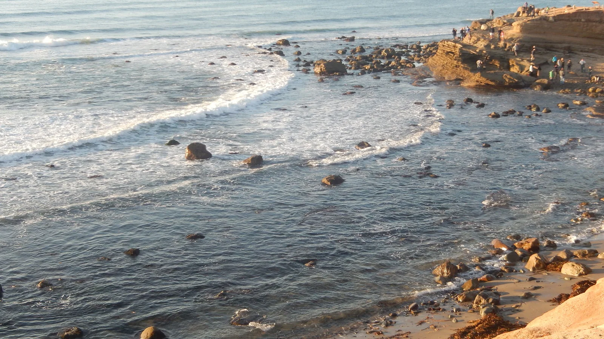
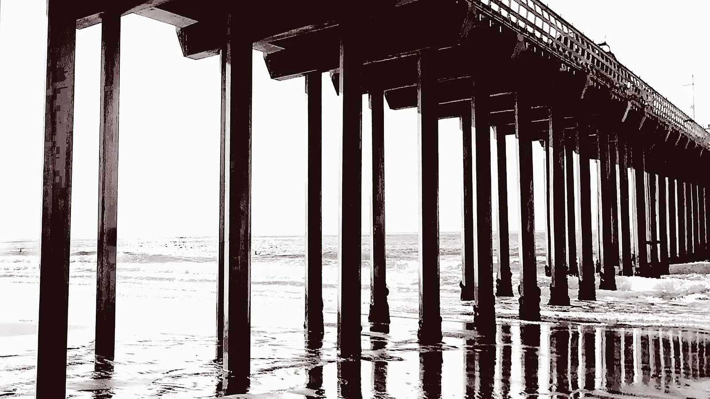
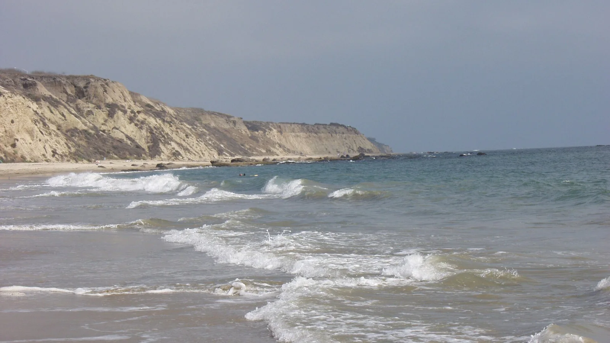
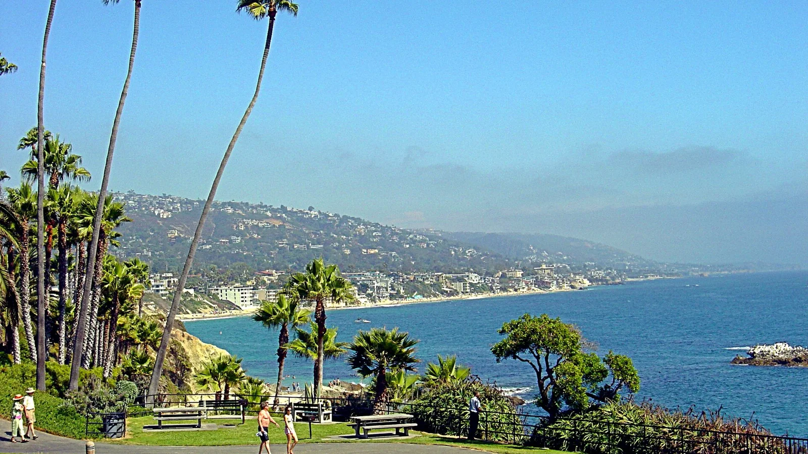
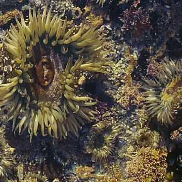
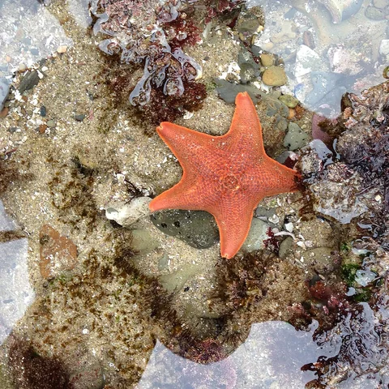
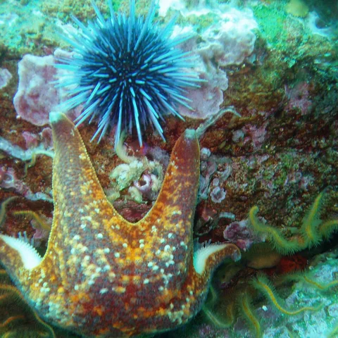
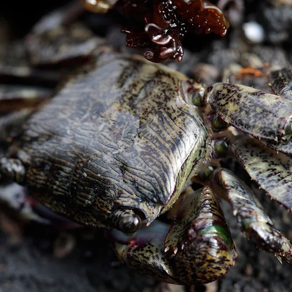
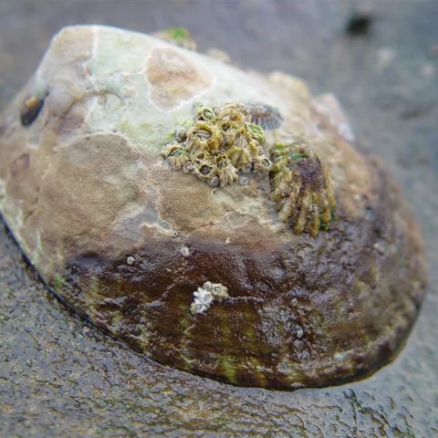
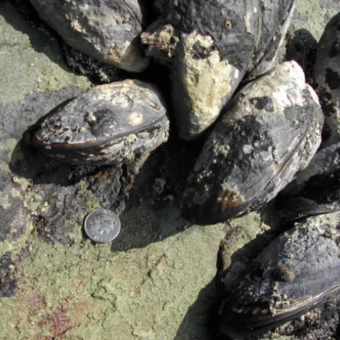

Tidepool · site-reviewed guide
Cabrillo National Monument
Point Loma, San Diego
A flagship Southern California rocky-intertidal walk, with broad sandstone shelves, ranger interpretation, and life across high-to-low tide zones.
Visitor informationA FIELD COMPANION FOR SOUTHERN CALIFORNIA
When the ocean draws back, a different shore comes into view. Find a place to explore, understand the tide, and get to know the life between the rocks.
Explore the shoresFree to explore. Made for curiosity, learning, and care.

01 / FIND YOUR SHORE
Four tidepool guides and ten discovery sites, from San Diego County to Orange County. Find a familiar shore or a new place to get curious.
A reviewed, site-specific tide guide. The app compares predictions with that shore's own guidance.
A place to investigate, with a nearby gauge and a borrowed tide guide. The app marks this Best estimate, not site-reviewed guidance.
Point Loma, San Diego
A flagship Southern California rocky-intertidal walk, with broad sandstone shelves, ranger interpretation, and life across high-to-low tide zones.
Visitor information
Scripps Beach, La Jolla
A volcanic dike and small intertidal bench north of Scripps Pier within a diverse protected nearshore corridor.
Visitor information
Crystal Cove State Park, Orange County
Crystal Cove's Pelican Point pairs a managed bluff-top approach with a low-tide rocky shore in a protected coastal park.
Visitor information
Heisler Park, Laguna Beach
A compact, isolated Heisler Park cove that is most rewarding on lower winter tides.
Visitor informationThese ten San Diego County sites use estimates. Check access, posted notices, and the conditions you find before stepping onto the shore.
The recorded Explore list labels its cards Tidepool or Discovery site. It scrolls past Pelican Point and Crystal Cove, then changes to a map showing the sites. The listed conditions belong to the recording date, not today.
Shore photographs are context, not current conditions or directions. Sources and photo credits.
02 / READ THE TIDE
The same stretch of rock can be underwater now and full of pools later. The tide chart helps you see that change before you set out.
Predictions are compared with the site's tide guide and daylight. A low tide is a starting point, not a promise that every pool will be exposed.
Surf, weather, and site hazards sit alongside the tide. Surf above a site's guide is a caution to go with care; a high tide can close the exposure window.
Discovery sites identify their nearby gauge and borrowed guide. That distance matters: the water at your feet may not match a prediction.

The horizontal axis runs from midnight through 6 PM; the vertical axis is tide height in feet. The orange line is Dike Rock's 1.0 ft visit guide. Compare the prediction curve with that line and the daylight shading to understand the exposure window. The screenshot shows day 1 of a seven-day forecast. Tide height is not water depth, and a chart does not describe every wave or pool.
In this recorded Dike Rock example, the site-reviewed tide guide shows a daylight window below 1.0 ft. The screen also says Limited — go with care and Surf too high. Scrolling reveals forecast surf of 3.4 ft above the site’s 2.5 ft guidance, with advice to watch the sets and turn back if waves reach the pools. The Tide forecast section opens, revealing the Tide chart heading; the curve itself is below the visible screen. These are dated demonstration values, not current conditions.
03 / LOOK CLOSER
An anemone tucked into a crack. A limpet that looks like rock. Take your time: the field guide helps you put a name to what you notice.
A few inhabitants from the app's field guide. Where and when you find them varies; this isn't a sightings forecast.

Anthopleura elegantissima
Aggregating anemones attach to rocky pools and crevices, often forming dense green-tinted patches. Watch without touching or lifting them from water.

Patiria miniata
Bat stars have webbing between short, triangular arms and can be many colors. Leave sea stars in place and keep feet off shallow pools.

Strongylocentrotus purpuratus
Purple sea urchins graze algae with movable spines and tube feet. Keep hands and feet away from the spines and their rocky crevices.

Pachygrapsus crassipes
Lined shore crabs slip into narrow rock cracks and scrape small plants from surfaces. Give them space and do not turn rocks over to find one.

Lottia gigantea
A limpet is a low-profile marine snail that clamps tightly to rock. It may look like part of the shore—never pry it from its home scar.

Mytilus californianus
California mussels form dense beds on wave-exposed rock and shelter smaller shoreline life. Leave every mussel attached to the reef.
Actual field-guide photographs and descriptions, with credits and licences.
04 / LEAVE IT WILD
These pools are somebody's home. A little knowledge changes where you put your feet, what you leave alone, and what you take away.
Most tidepool animals are coated in a protective slime, and dry hands damage it. Watch where you step, step only on bare rock or sand, and keep hands, sticks and nets away from the animals.
Source: California Coastal CommissionHalf the life in a tidepool hides underneath. Flipping a rock exposes animals to sun and predators and can crush whatever is beneath it. Leave every rock exactly as you found it.
Source: California State ParksPicking up litter is one of the most useful things a visitor can do for a tidepool. Carry out what you find, along with everything you brought, so the next low tide is a little better.
Source: California Coastal CommissionFrom 68 reviewed tips in the app, each with its source. This selection was reviewed 29 September 2026.
The Explore header starts on LOOK CLOSER with the tip Shore crabs are the pool’s recyclers. A sideways swipe changes to TIDEPOOL ETIQUETTE, then a swipe back restores the previous tip. Tapping opens its full text, WHY IT MATTERS, and an Open the source link.
TAKE A LITTLE CURIOSITY WITH YOU
Oh Tidepool is a free app for learning about the shore, in public beta for iPhone. Explore the sites, tide charts, field guide, and reviewed tips. Optional plan-visit alerts follow the tide and weather, with surf noted in the notification.
Join the public TestFlight betaInstall Apple's free TestFlight app, then open the join link on your iPhone. No invitation or Oh Tidepool account needed.
testflight.apple.com/join/pNysjdxG
This is a test build, not an App Store release. Tell us what worked, or what didn't.
Images are the reviewed renditions used in the app. Cropped/resized versions retain the licences listed below; CC BY-SA derivatives are offered under their respective share-alike licences.
All app licences and data sources · CARI Corresponding Source


_(9ba2c265-aa2e-4e99-b96a-4f3aaa42153a).jpeg){kind=link}
_and_purple_urchins_(Strongylocentrotus_purpuratus).jpg){kind=link}
.jpg){kind=link}
.JPG){kind=link}
.png){kind=link}